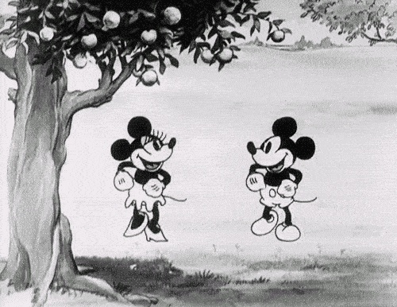

O INÍCIO: A ÉRA MUDA
|
Antes mesmo de lançar seus longas-metragens para o mundo todo, a Walt Disney surgiu de forma nada tímida, já mostrando todo o talento do estúdio ao mundo graças à sua variada gama de curtas-metragens - que, diga-se de passagem, são lançados até hoje.
 A maior parte desses filmes surgiu antes da invenção do som nos cinemas e boa parte era exibida antes de outros longas ou através de pequenas séries cinematográficas (conhecidos como film serials).Nessa época, tivemos algumas pequenas franquias clássicas, como Alice Comedies - inspiradas em Alice no País das Maravilhas, que depois se tornaria uma animação clássica do estúdio. Foi nessa época também que surgiram personagens icônicos como Mickey Mouse, Pateta e Pato Donald. |